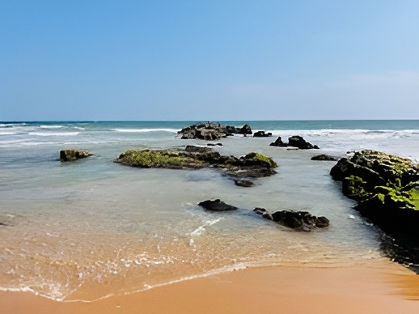

Call for Papers
Researchers, Academicians and Industry Professionals are requested to submit their unpublished research findings related to Privacy-Preserving Federated Learning in this conference.

First International Conference on Building Secure and Scalable Privacy-Enhanced Federated Learning Systems, 2026
Building secure and scalable privacy-enhanced federated learning systems involves creating architectures where multiple entities collaboratively train models while keeping their data localized, thus enhancing privacy. Such systems employ advanced cryptographic methods like homomorphic encryption and differential privacy to ensure that individual data contributions remain confidential. Scalability is addressed by optimizing communication protocols and data compression techniques to handle large volumes of data efficiently across diverse networks.

Additionally, robust anomaly detection mechanisms are integrated to safeguard against malicious participants and data poisoning. Implementing decentralized governance models can further enhance trust and compliance with global data protection regulations. The result is a federated system that not only respects user privacy but is also resilient and capable of operating at scale, making it suitable for widespread adoption in sensitive industries like healthcare and finance.
Researchers, Academicians and Industry Professionals are requested to submit their unpublished research findings related to Privacy-Preserving Federated Learning in this conference.